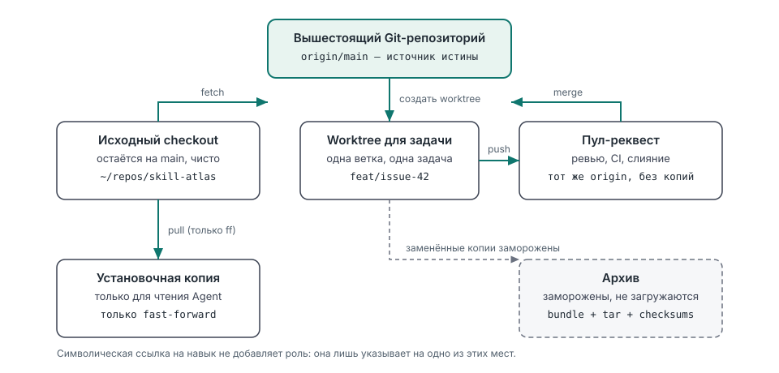
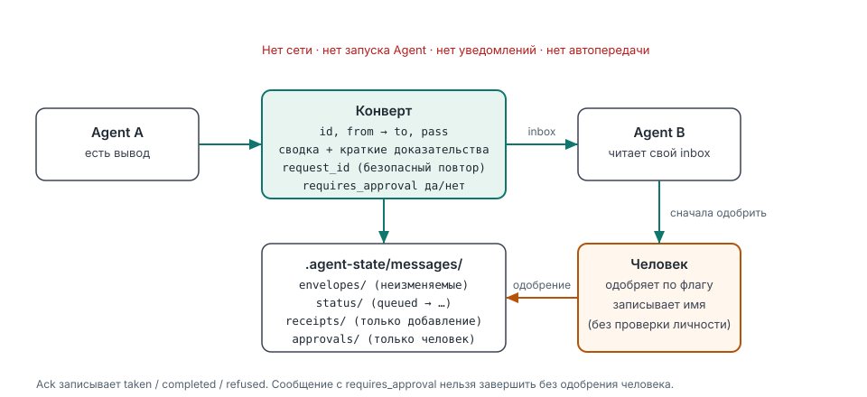
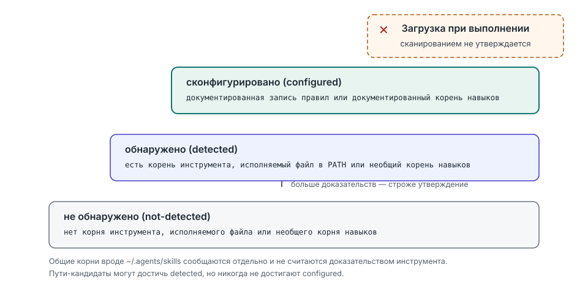

Менеджер навыков агентов · приоритет локальной работы · только для чтения по умолчанию
Узнайте, что на самом деле видят ваши агенты.
Ваш локальный атлас окружения агентов
Skill Atlas показывает, какие агенты для программирования есть на вашей машине, откуда каждый из них загружает правила и навыки, совпадают ли ваши локальные копии Skill Atlas и где один и тот же проект существует более чем в одном месте с разошедшимися документами. Это навык для Codex, Claude Code, DeepSeek Harness, OpenCode, WorkBuddy, Kimi Code и других инструментов агентов.
npx skills add Jorgut/skill-atlasПочему это существует
Skill Atlas вырос из конкретного сбоя, а не из списка возможностей.
Метка версии скрывала три слитых PR
Исходная рабочая копия и копия, которую агент фактически загрузил, расходились на три
слитых пул-реквеста, при этом установленная строка версии выглядела актуальной.
agents scan сравнивает локальные копии Skill Atlas и сообщает
version_mismatch, а не доверяет метке.
У агентов были собственные копии проектов
Один и тот же проект существовал в нескольких каталогах, и каждый открывался отдельным
инструментом. projects audit группирует вероятные дубликаты по нормализованному
git remote (подтверждено) или по имени каталога без учёта регистра (вероятно).
Документы в копиях разошлись
AGENTS.md, CLAUDE.md и файлы состояния различались между копиями,
поэтому представление агента зависело от того, какую рабочую копию он открыл.
Аудит хеширует эти документы и сообщает, какие копии различаются, не выводя их содержимое.
Настроенные файлы — не загруженные правила
Наличие файла правил на диске не доказывает, что агент его прочитал. Лестница доказательств
останавливается на configured; загрузка во время выполнения никогда не утверждается,
а настроено, загружено и проверено при передаче остаются отдельными утверждениями.
Демонстрация за 30 секунд
Сокращённый вывод реальных запусков. Количество инструментов, пути и хеши зависят от машины.
Какие инструменты агентов и копии Skill Atlas существуют
python3 scripts/skill_atlas.py agents scan
## Summary
- tools detected: 12
- tools configured: 4
- skill atlas copies: 2
- version mismatch: falseГде копии проектов разошлись
python3 scripts/skill_atlas.py projects audit \
--project ~/repos/widgets --project ~/worktrees/widgets-review
## Duplicate groups
### `git-remote:github.com/example/widgets` (git-remote)
- divergent docs:
- AGENTS.md (2 distinct hashes)
- canonical candidate: `/home/you/repos/widgets`
- requires user confirmation: trueОставить сообщение о передаче с квитанцием
python3 scripts/skill_atlas.py message send --project . --task issue-28 \
--from Codex --to "Claude Code" --summary "Review the camera diff" \
--requires-approval
# Agent message: queued
- state: queued
- approval: pending
- note: Local file transport only; the receiving agent has not been notifiedКак это работает
Три схемы объясняют всю модель. Никакого второго источника истины, никакого скрытого состояния.



configured.
Прочитать руководство по сканированию.Что он делает и от чего отказывается
Граница — часть продукта, а не дисклеймер.
| Он сообщает и планирует | От чего он отказывается |
|---|---|
| Какие инструменты агентов оставляют доказательства локально и на какие корни правил и навыков они указывают | Отправлять что-либо по сети по умолчанию; публичный поиск выполняется только с явными опциями и настроенным доступом |
| Где находятся копии Skill Atlas, их версии, псевдонимы и флаг несовпадения | Доверять метке версии или утверждать, что агент загрузил копию, которую он не загружал |
| Где существуют копии проектов, какие выглядят дубликатами и какие документы различаются | Выводить, хранить или сравнивать содержимое этих документов проектов |
| Инвентаризация навыков, дубликаты, планы обновления и объединения | Запускать инструменты агентов, выполнять сторонний код или запускать другого агента |
| Рекомендации навыков, моделей и инструментов, оценённые по общей рубрике | Выдумывать бенчмарки, цены, доступность или постоянный рейтинг моделей |
| Необязательные локальные сообщения о передаче с квитанциями и шлюзом одобрения человеком | Автоматически перемещать, сливать, архивировать или удалять файлы |
С чего начать
Подробная документация находится в репозитории; каждая страница указывает свои ограничения.